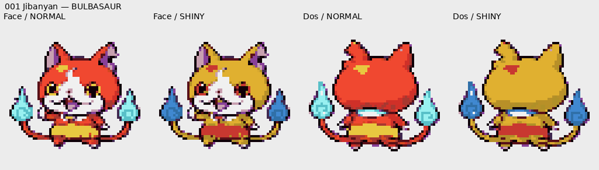

001 Jibanyan

Source, zones et limites
ARTWORK_DIRECT — REFERENCES_ORIGINALES/001_Jibanyan.webp
fourrure : index 3,6,7,10 → #e6b633 ; collier : index 4 → #c83b34 ; esprits : index 12,13 → #438bd1
Palette de 16 entrées, index 0 transparent ; ombres modulées suivant la luminosité des couleurs normales, ancrage médian pondéré face/dos. Les zones partageant un index suivent la même couleur ; fidélité locale à contrôler sur les aperçus.